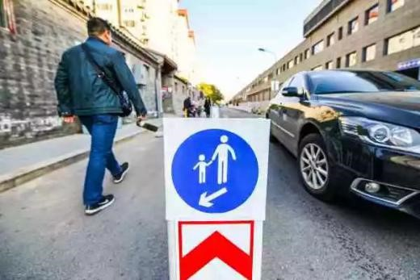
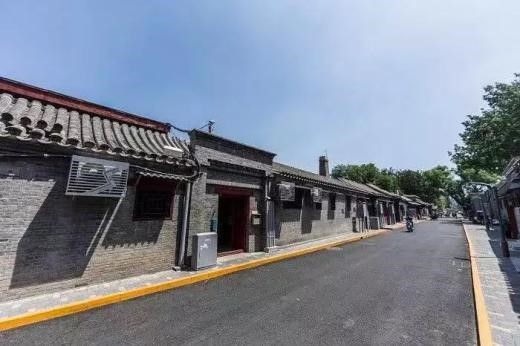
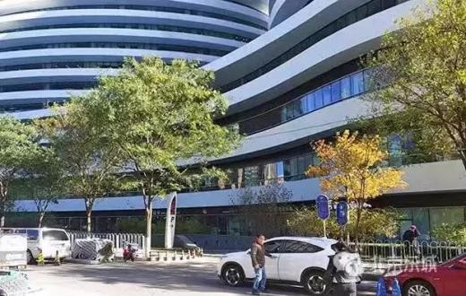
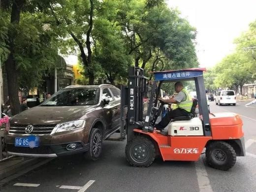
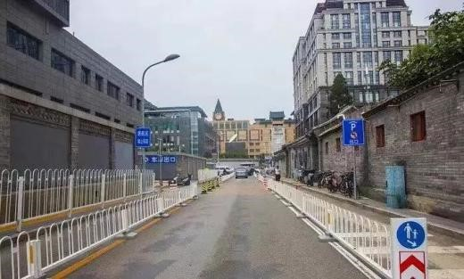
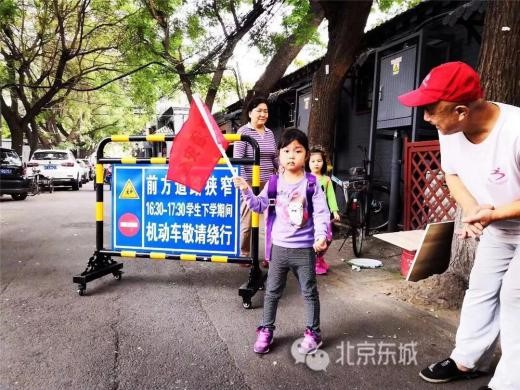

东城缓堵今年走这6步棋……
来源：北京东城
今年，东城区将通过“一体化谋划、常态化推动、精细化落实”，全面深化“治堵、治乱、治祸”，从违法停车专项治理、学校周边安全秩序等六个方面推动全区缓解交通拥堵工作。
“围绕群众关注的交通管理热点，我区将重点围绕学校周边、医院周边和老旧小区周边的停车秩序管理、交通拥堵缓解等问题，努力让人民群众更有获得感。”区交通安全委员会副主任王晓予表示，通过不断丰富交通安全宣传形式，将面向学生群体的交通安全宣传作为重点攻坚项目之一，适时推广符合“国标”的新式交通安全反光校服的使用，为学生群体的交通安全提供切实保障。
据悉，下一步东城区还将借助“疏整促”有利时机，以南锣鼓巷、苏州胡同为重点，持续推进“胡同不停车”工作。同时，加强区域重点道路的交通设施优化调整工作，最大限度更换撤除交通护栏，还古都历史文化风貌。
2019年东城区缓解交通拥堵行动计划
1、全力歼灭19处堵点乱点
相关职能部门、街道办事处将在区缓堵办的协调下，通过深入调研，进一步提升堵点、乱点治理精细化水平。通过整合各方资源力量，构建具有东城特色的共建共治共享体系，努力提升道路交通通行能力。
2、强化重点区域联合攻坚
围绕和平里南街、东四（三、六、九条）、北京站、银河SOHO周边等重要点位，探索实行分区域包干治理。相关街道将依托科技信息化优势，转变观念，打破常规，创新理念、机制、方法，充分运用科技手段提质增效。
3、推进违法停车专项治理
重点围绕管界内主干道路，加快推进道路交通标志标识和电子监控执法设施建设，对重点道路、禁停标线施划道路依托第三方拖车机构，采取拖移机动车方式消除违法行为。招录区级停车协管员，强化路侧停车秩序维护，每15分钟巡查一次，拍照取证违停车辆。在此基础上，各系统、各单位、各街道办事处采取深挖内部资源、空间资源的方式，通过立体停车、分时段停车、停车资源共享等手段，解决停车难问题，缓解道路交通拥堵。
4、加强全区非机动车管理
严格落实《非机动车管理条例》，各街道办事处将电动自行车临牌核发站日常工作列入本街道日常工作内容，积极开展辖区电动自行车临牌申领普法宣传，动员辖区内使用超标电动车交通参与者尽快申领牌证，5月1日起，对未申领临时标识或过渡期满后上路行驶的超标电动自行车加大执法力度。
5、推广医院周边拥堵治理成果
2018年东城区在协和医院内外部开展了缓堵治理工作，成效突出。全区医疗卫生系统、单位要在试点医院开展综合治理行动基础上，针对就诊时间相对集中导致的医院周边道路拥堵问题，通过畅通微循环、完善隔离设施、分流过境车辆等措施，缓解医院周边交通拥堵。
6、大力整治学校周边交通秩序
按照规范设置禁停标志标线，施划人行横道，完善交通监控设备等安全设施。区教委要按照市教委、市公安局、市交通委联合下发的《中小学校周边交通综合治理工作方案》部署要求，加强学生日常安全教育，将遵守交通安全法规、倡导文明绿色出行纳入学校德育和安全教育课程教材。加强学生日常行为规范管理。
将遵守交通安全法规、维护学校周边交通秩序纳入中小学养成教育三年行动计划和学生日常行为规范管理。加强对家长的交通文明引导教育。充分发挥家长学校作用，引导家长在接送孩子上下学时，不在学校门前划定区域内乱停乱放车辆。鼓励有条件的学校实行错峰上下学。进一步完善义务教育阶段就近入学制度。坚持小黄帽路队制。同时积极推广启用中小学生交通安全反光校服的工作。